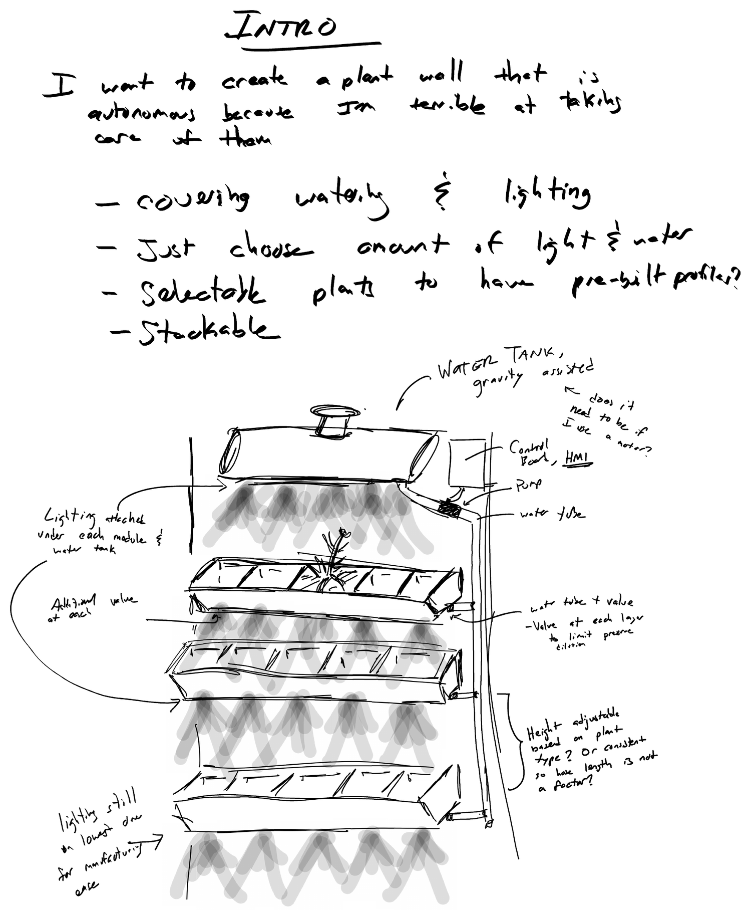
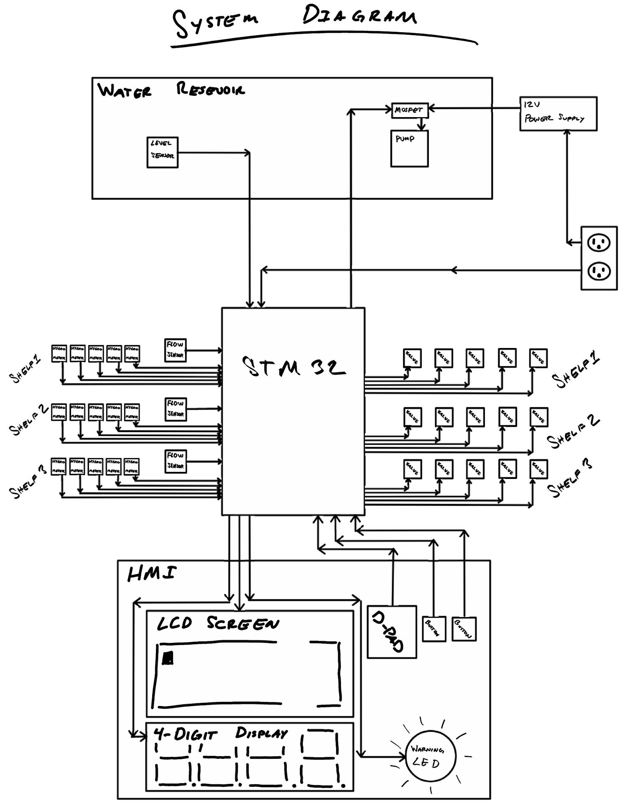
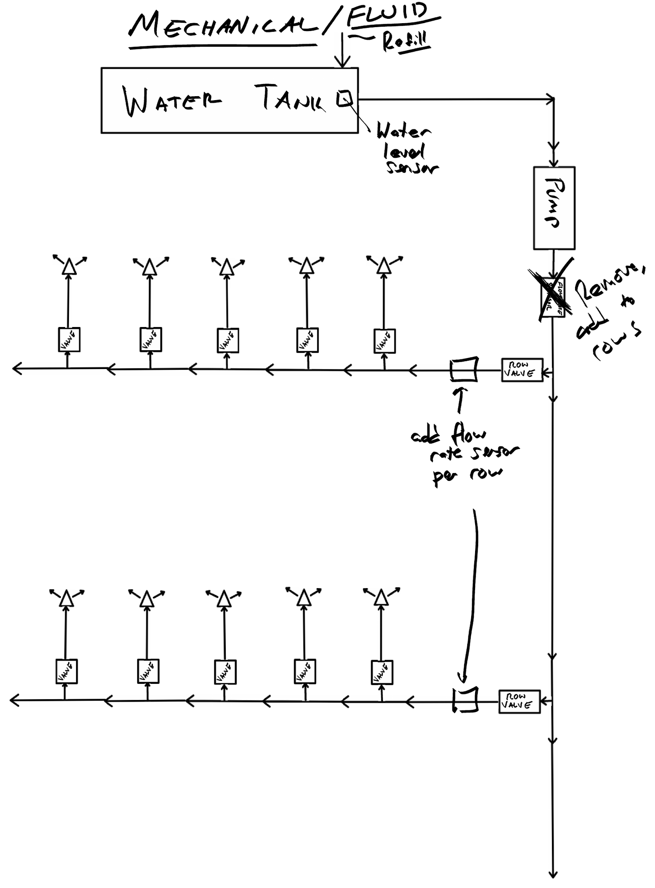
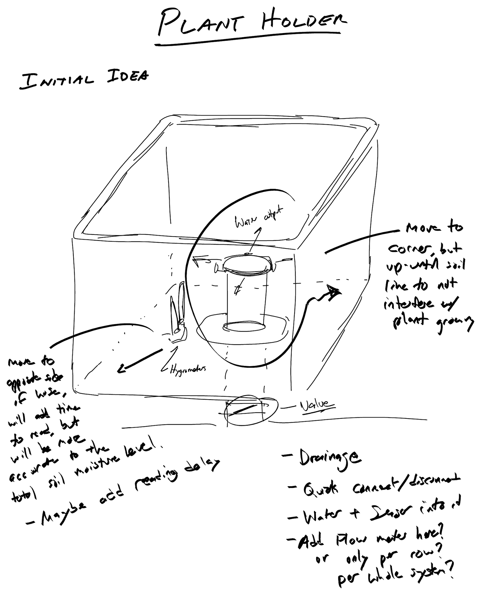
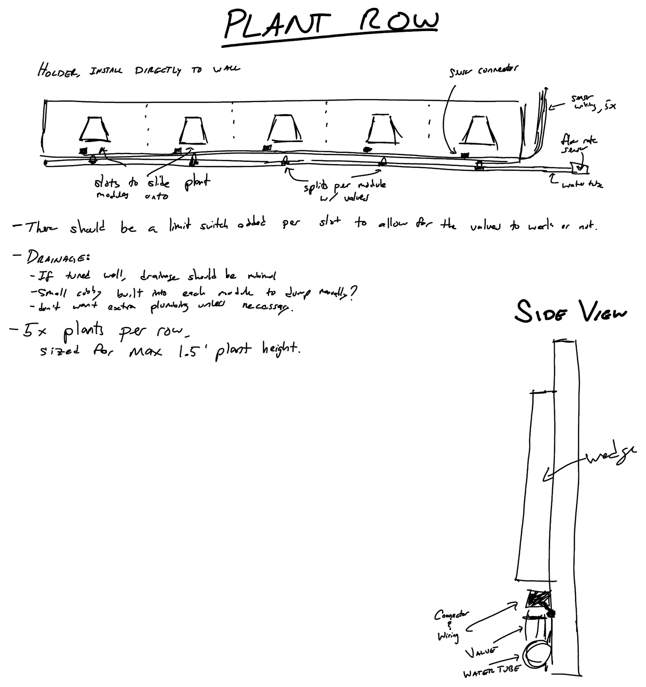
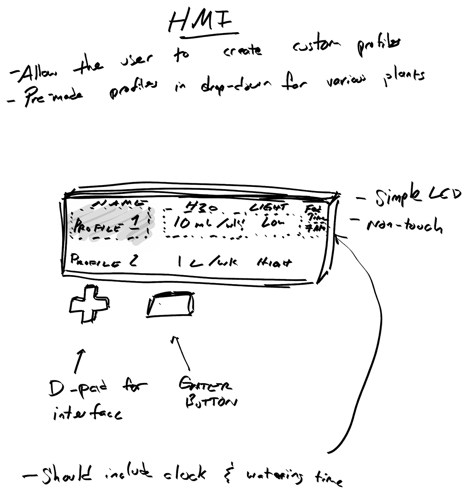
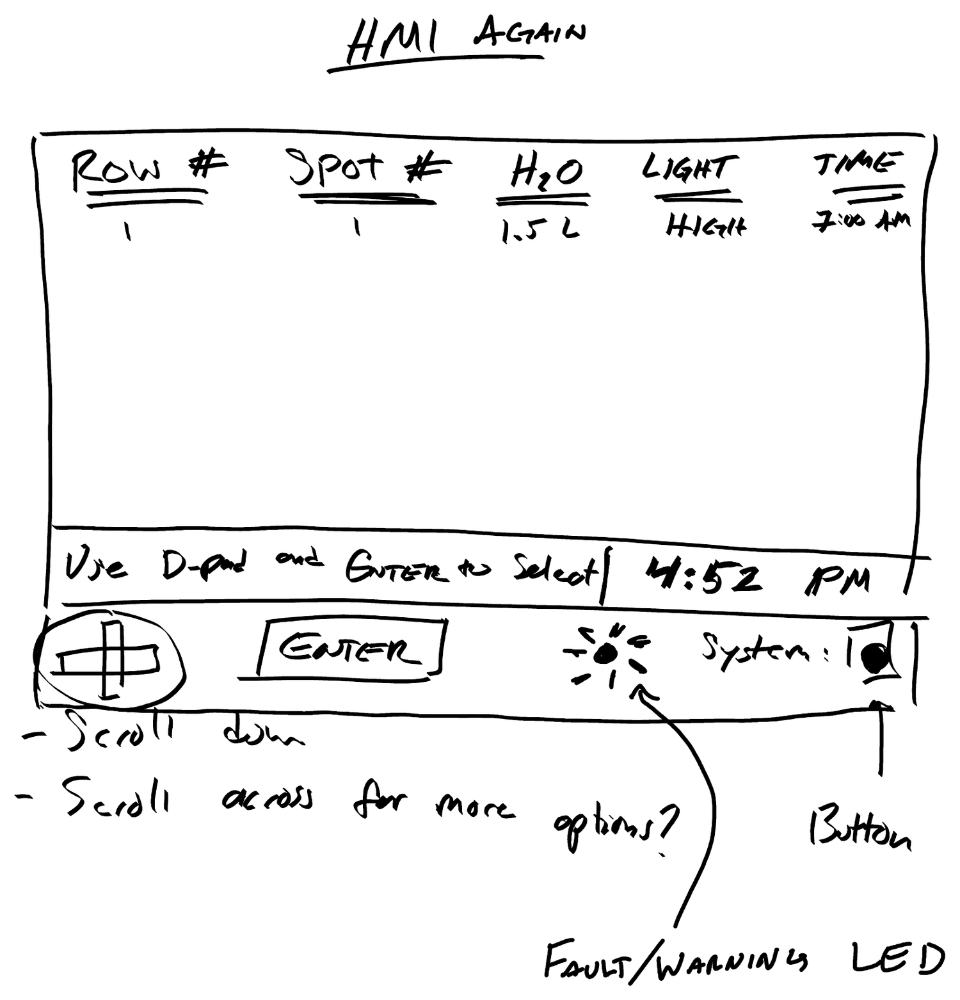

Initiation
Intro
I want to create a plant wall that is autonomous, because I am terrible at taking care of them.
- Covering watering and lighting.
- Just choose the amount of light and water.
- Selectable plants to have pre-built profiles?
- Stackable.

Helpful links
Goals
- Prove out an autonomous plant wall in a single month
- Learn to create Embedded Systems from scratch
- Use RUST to program it
- Create, test, tune, and integrate control loops
Initial Requirements
- R1Time limitation: get it to "good enough" in 1 month, the month of November 2026.
- Functional electrical system.
- Firmware created, with sensor checks and plant position checks.
- Mechanical for 2 shelves, with 3 plants made. This allows for mixing and matching locations to prove out the logic, and includes plumbing, plant box and row. It does not include lighting.
- HMI functioning to select water amount and time, with functioning buttons and no visible clock.
- R2Easy for my wife to use, as she is not in the software world, because this is going on her office wall.
- R3In depth understanding of embedded systems. I do software work and testing, but have a gap in knowledge of the hardware and firmware part. I want to do the whole process to understand.
- R4Use Rust to write it, as it is smaller and quicker than C, and I want to learn it as well.
- R5A system to understand which plants exist, to have safety for the water valves.
- R6Normally closed valves, for lower power draw and low leak risk if power is lost.
System Diagram

Mechanical / Fluid

Hardware Estimates
Primary BoardSTM32 Nucleo-64 development board with STM32F446RE MCU, good for learning, gives me a chance to create my own firmware and software from scratch. It controls the whole thing.
Pump / motorMoves the water. An auto windshield washer pump should be reliable enough and common enough.
ValvesFor each module and each row. Normally closed!
TubingAuto windshield washer diameter, to keep it consistent and cheap.
Plant podA module to hold plants.
Plant rowA row of plants. Width is undefined so far, possibly varying widths.
Water tankHolds the water. It needs to be easy to fill and hold enough for a week or two.
LCD screenTo display info and set profiles.
D-padControls the HMI to enter profiles.
Button(s)ENTER for the menu, a circle button to enter settings.
Flow rate sensorEach row instead?
LEDFor lights to feed from.
Water level sensorTo not run out of water or empty the tubes.
Small LEDHMI warning: low light, fault, etc.
4 digit, 7 segment displayI have one, so I want to use it for the clock.
Plant Pod

Open Points
- Drainage.
- Quick connect and disconnect.
- Water and sensor integrated.
- Add a flow meter here, or only per row, or per whole system?
Plant Row

- There should be a limit switch added per slot to allow for the valves to work or not.
- 5x plants per row, sized for a max 1.5 ft plant height.
Drainage
- If tuned well, drainage should be minimal.
- A small cubby built into each module to dump manually?
- Don't want extra plumbing unless necessary.
Firmware & Embedded SW
- Checks for the number of connected sensors.
- Checks sensor readings to make sure they are in spec: rate and range.
- Use the hygrometer sensor as a presence sensor.
- Make sure things like flow rate can be updated without a flash, by keeping them in EEPROM.
- Check for the number of rows and plants, allow that many spots in the HMI and hide the rest.
- Check the fluid level sensor for the warning LED, and add HMI warnings.
Task cycles
20 Hz? 100 Hz? It depends on the flow sensor and the physical rate of flow.
Electrical
Communication protocol
- I want adding sensors (from more rows) to be easy.
- Comm rate? Flow rate, 100 Hz? How fast can I get?
- I²C seems like a good option: relatively simple, minimal wiring, easy to add new rows, never used so good to learn, and the standard is 100 kHz, more than fast enough.
Inputs and outputs, max
- 1x overall system: 1x water level sensor, 1x pump.
- 5x rows: 1x flow sensor per row.
- 10x plants per row: 1x valve per plant, 1x LED per plant.
- Max = 102 possible I/O.
- STM32 max is 114.
- 5V though, need 12V for the pump.
HMI
- Allow the user to create custom profiles.
- Pre-made profiles in a drop-down for various plants.
- Should include a clock and watering time.


Tuning and modeling
With a flow meter, I will need to compare the actual water out against the calculated amount.
Three sections of a valve cycle
- Valve opening.
- Valve steady state open.
- Valve closing.
This is probably affected by the total number of shelves. What is the minimum number of sensors I can get away with?
Hygrometer
Water amount versus soil moisture level. Probably not linear, so I will need a curve parameter.